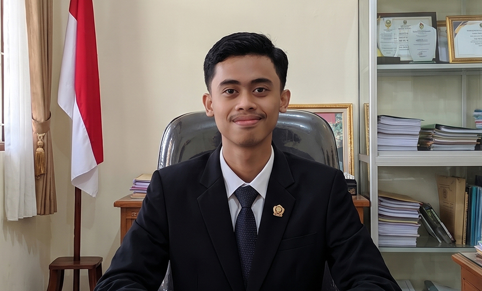

Kepala Sekolah
S1 Teknik Informatika Universitas Perjuangan
Wakasek Bidang Kurikulum
S2 Pendidikan Matematika UNSIL
Wakasek Bidang Kesiswaan
S1 Pendidikan Jasmani & Kesehatan
Guru Informatika & Pemrograman Web
S2 Teknik Informatika ITB
Guru Fisika & Pembina KIR
S2 Pendidikan IPA UPI
Guru Kimia & Kepala Lab IPA
S1 Pendidikan Kimia UNPAD
Guru Ekonomi & Kewirausahaan
S2 Manajemen UNSIL Tasikmalaya
Guru Bahasa Inggris & Jepang
S2 Linguistik Terapan UNPAD